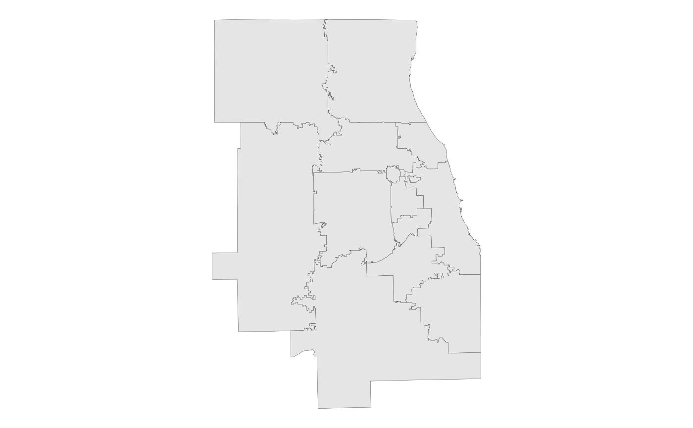

This dataset was developed by CMAP to create a more up-to-date depiction of Council of Mayors (COM) boundaries. Since COMs are made up of groups of municipalities, CMAP utilized the most current available municipal boundaries from the seven counties to help construct this file in September 2010. This file was updated in March 2013 to reflect the expansion of the MPA into DeKalb County (Sandwich and Somonauk Townships).
com_sf
A multipolygon sf object with 12 rows and 4
variables:
Council of Mayors name (short). Character.
Council of Mayors name (full). Character.
Area in square miles. Double.
Feature geometry. sf multipolygon.
DISCLAIMER: Subregional Councils of Mayors (COM) boundaries are a hybrid of county and municipal boundaries. The council boundaries are based on the membership of municipalities within a subregional council. County boundaries are followed in unincorporated areas. For municipalities designated as belonging to more than one council, the county boundary is followed. Example 1: the City of Naperville is a member of the DuPage Council of Mayors; since Naperville city limits extend into Will County, the DuPage COM boundary follows the Naperville boundary (including all unincorporated pockets) in Will County. Example 2: Buffalo Grove belongs to both the Lake County and Northwest subregional councils; in this case, the subregional boundary follows the county boundary through Buffalo Grove.
It is important to note here that the portions of COM boundaries, defined by municipalities, are fluid: they change as a village annexes adjacent unincorporated land. The boundaries depicted in this dataset reflect municipal boundaries of varying vintages and sources, and cannot be considered “true” for any given point in time.
